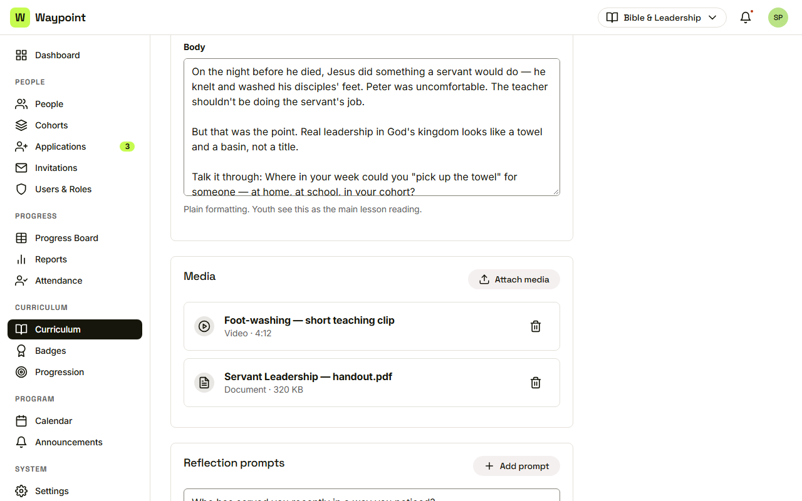
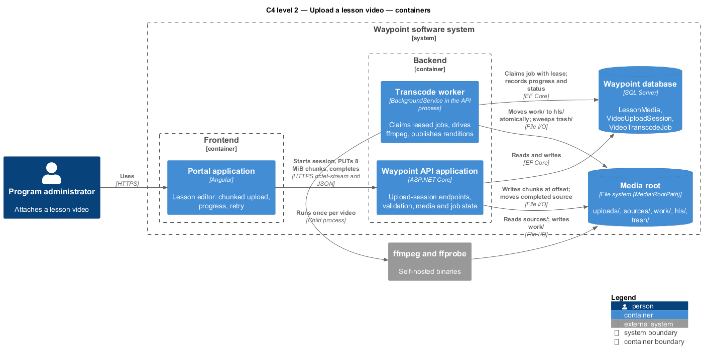
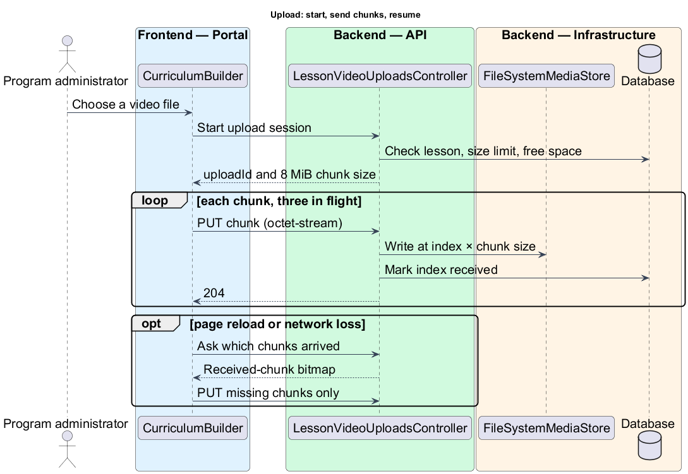
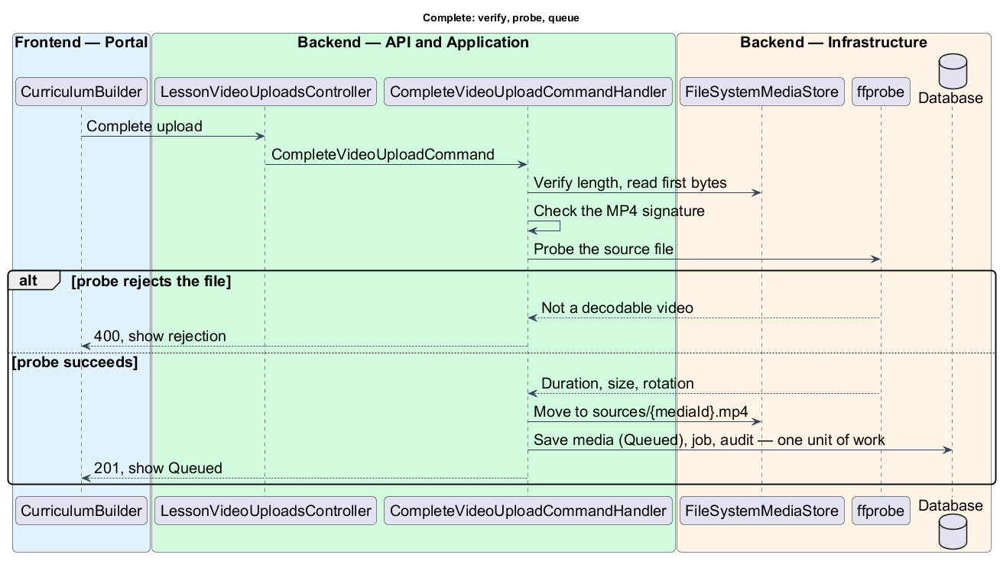
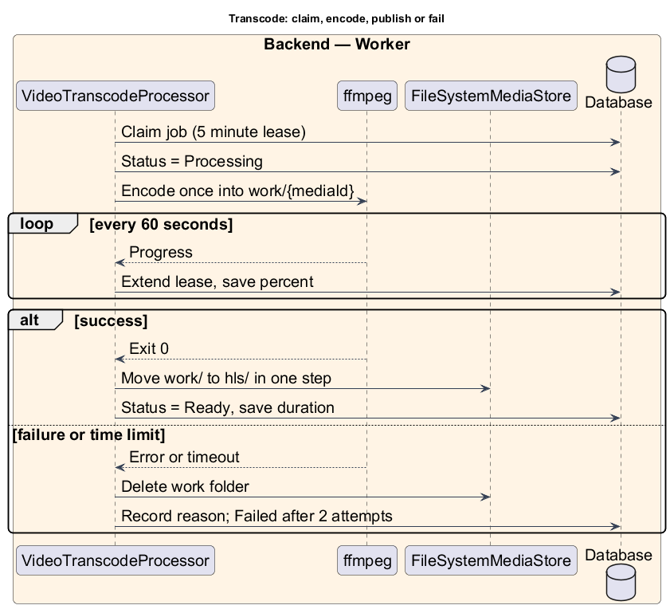

Waypoint · Video 115
Uploading a lesson video
From a recording of any length to a stream-ready ladder
Today: one 25 MB file, stored in the database

The Media card in the lesson editor mock
Portal, API, worker, database, media root

Design diagram: containers
Resumable: chunks land at their own offset

Design diagram: start, chunks, resume
Complete: verify, probe, queue

Design diagram: completion
A leased job, one worker
- 1Claim the job with a five minute lease
- 2Extend the lease while ffmpeg runs
- 3Write to a work folder
- 4Move it to the published folder in one step
One pass, up to four renditions
1080p · 5000 kbit/s
720p · 2800 kbit/s
480p · 1400 kbit/s
360p · 800 kbit/s
Six second fragmented MP4 segments · key frame every two seconds · poster image
Transcode, publish, or fail and retry

Design diagram: background transcode
What the author sees
- Queued
- Processing, with a percentage
- Ready, with the duration
- Failed, with a retry button
The current mock does not yet draw the progress or failure states
Things to remember
- Upload in resumable chunks
- Reject bad files at completion
- Transcode once into a ladder
- Publish in one atomic move